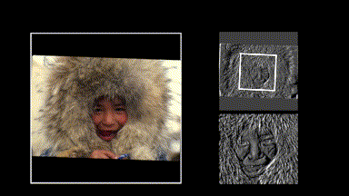

Harmonic Networks: Deep Translation and Rotation Equivariance
University College London
Regular CNN
CNN - HNet Comparison

HNet

Abstract Translating or rotating an input image should not affect the results of many computer vision tasks. Convolutional neural networks (CNNs) are already translation equivariant: input image translations produce proportionate feature map translations. This is not the case for rotations. Global rotation equivariance is typically sought through data augmentation, but patch-wise equivariance is more difficult. We present Harmonic Networks or H-Nets, a CNN exhibiting equivariance to patch-wise translation and 360-rotation. We achieve this by replacing regular CNN filters with circular harmonics, returning a maximal response and orientation for every receptive field patch. H-Nets use a rich, parameter-efficient and low computational complexity representation, and we show that deep feature maps within the network encode complicated rotational invariants. We demonstrate that our layers are general enough to be used in conjunction with the latest architectures and techniques, such as deep supervision and batch normalization. We also achieve state-of-the-art classification on rotated-MNIST, and competitive results on other benchmark challenges.
 Supplement - [231 kB]
Supplement - [231 kB]
@InProceedings{Worrall_2017_CVPR,
author = {Worrall, Daniel E. and Garbin, Stephan J. and Turmukhambetov, Daniyar and Brostow, Gabriel J.},
title = {Harmonic Networks: Deep Translation and Rotation Equivariance},
booktitle = {The IEEE Conference on Computer Vision and Pattern Recognition (CVPR)},
month = {July},
year = {2017}
}